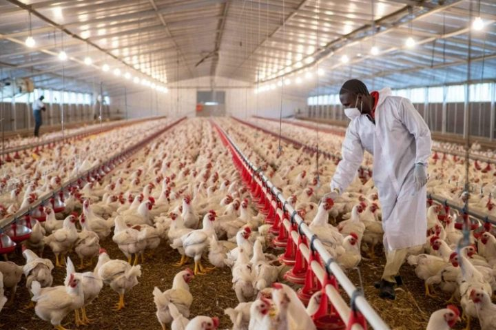
Livestock
Quality farm-produced livestock raised with responsible farming practices and attention to animal care.
Enquire About Livestock ↗Pure Harvest Farms Nigeria delivers wholesome livestock, responsibly farmed aquaculture and premium frozen food products. Combining sustainable farming practices with strict quality control, we bring freshness and confidence to every supply.
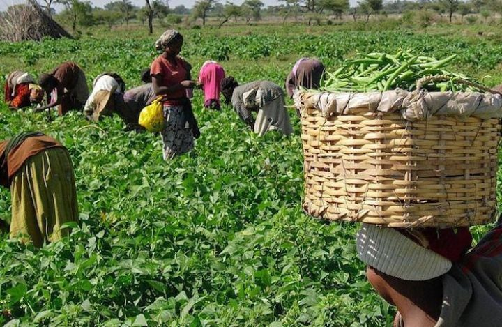
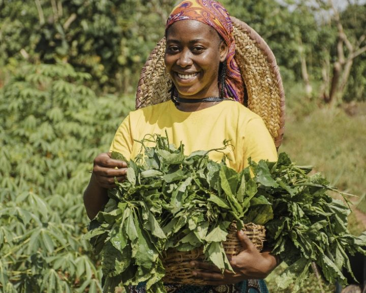
At Pure Harvest Farms Nigeria, we believe that quality food begins with responsible farming and careful handling. We are an integrated agribusiness brand focused on delivering clean, wholesome and responsibly sourced food products across livestock, aquaculture and value-added frozen foods. Through sustainable farming practices, thoughtful processing and strict quality control, we are committed to preserving freshness, nutrition and natural taste while serving households, retailers and institutional buyers. From farm to table, quality remains at the heart of everything we do.
FRESHNESS. QUALITY. TRUST.
From the farm to your kitchen, discover products you can trust. Explore our range of livestock, aquaculture and value-added frozen foods, produced and handled with a commitment to quality and freshness.

Quality farm-produced livestock raised with responsible farming practices and attention to animal care.
Enquire About Livestock ↗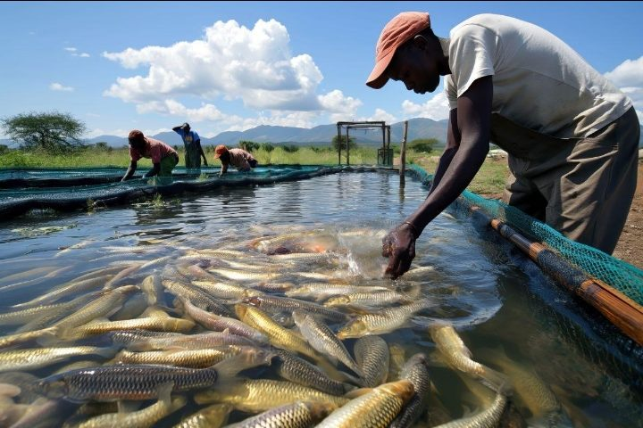
Fresh, responsibly farmed aquatic products with a focus on quality, freshness and careful handling.
Enquire About Aquaculture ↗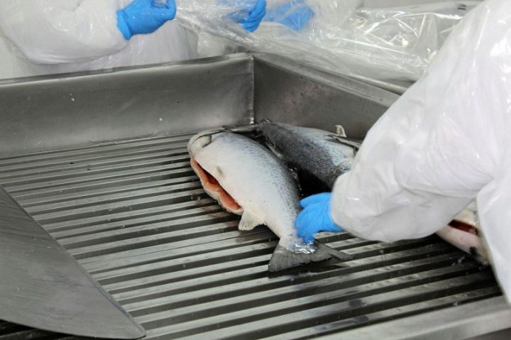
Carefully processed and preserved food products designed to retain freshness, nutrition and natural taste.
Enquire About Frozen Foods ↗A look at some of the Pure Harvest Agro packs. Ask us about availability and sizes.
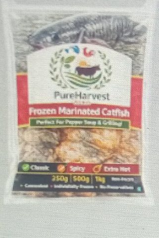
Perfect for pepper soup and grilling.
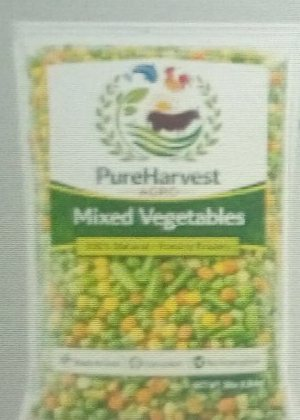
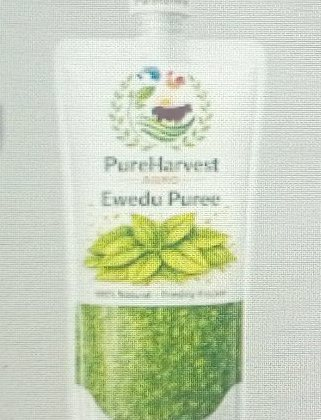
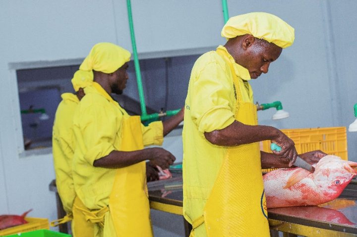
Our approach to agriculture brings together livestock farming, aquaculture and careful food processing. Every stage reflects our commitment to responsible practices, quality handling and delivering wholesome products to our customers.
Responsible livestock production with attention to animal care, farm management and product quality.
Fish production and harvesting supported by careful handling and attention to freshness.
Thoughtful processing practices designed to preserve the natural quality of food products.
Careful preservation and product handling to support reliable food supply.
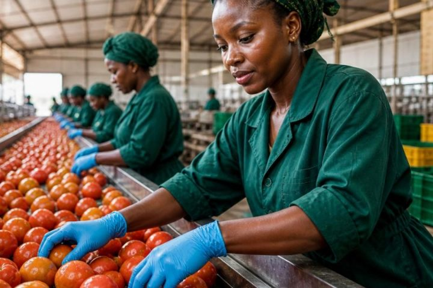
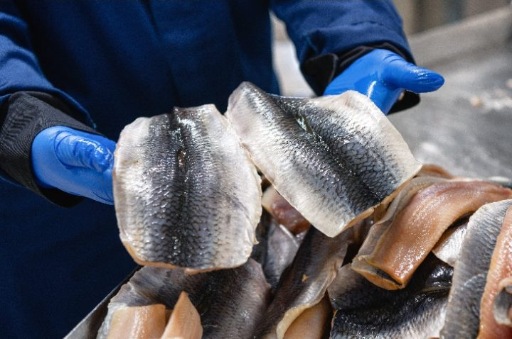
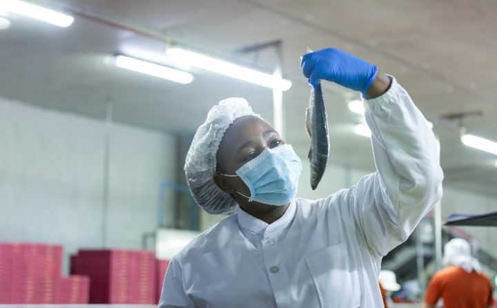
At Pure Harvest Farms Nigeria, quality guides every stage of our food production and supply process. From responsible sourcing and careful handling to processing and preservation, we are committed to maintaining the freshness, natural taste and quality of the products we deliver.
A commitment to responsible agricultural practices and carefully sourced food products.
Attention to proper product handling throughout production and supply.
A focus on maintaining product quality and consistency throughout our operations.
Thoughtful preservation and handling to help retain freshness, nutrition and natural taste.
At Pure Harvest Farms Nigeria, we believe good food begins with responsible sourcing and careful handling. Our approach brings together agricultural production, thoughtful processing and appropriate preservation to help maintain the quality, freshness and natural taste of the products we supply. Whether it is livestock, aquaculture or value-added frozen foods, we remain focused on delivering wholesome products customers can trust.
We place importance on responsible agricultural practices and carefully sourced food products.
Products are selected or harvested with attention to quality and suitability.
Attentive handling helps protect product quality as food moves through the supply process.
Where applicable, thoughtful processing and preservation help retain freshness and natural taste.
We serve households, retailers and institutional buyers with a commitment to quality and dependable service.
From everyday household needs to commercial food supply, Pure Harvest Farms Nigeria serves customers who value quality, freshness and dependable agricultural products.
Wholesome food products for families looking for quality and freshness in their everyday meals.
Quality agricultural and food products for businesses serving consumers and local communities.
Supply opportunities for bulk buyers and distribution partners seeking reliable product sourcing.
Food supply solutions for commercial kitchens, hospitality businesses and institutional buyers.
We understand that choosing a food supplier is about more than the product itself. It is about confidence in quality, responsible practices and the people behind the supply. At Pure Harvest Farms Nigeria, these values guide our approach to agriculture and customer relationships.
Our focus spans livestock, aquaculture and value-added frozen foods.
We give attention to processing, handling and preservation where applicable.
We place importance on responsible sourcing, careful handling and product quality.
We aim to understand the needs of households, retailers and institutional buyers.
Whether you are looking for quality food products, bulk supply opportunities or a long-term agricultural partnership, we'd be happy to hear from you.